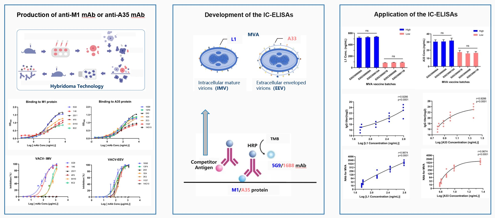
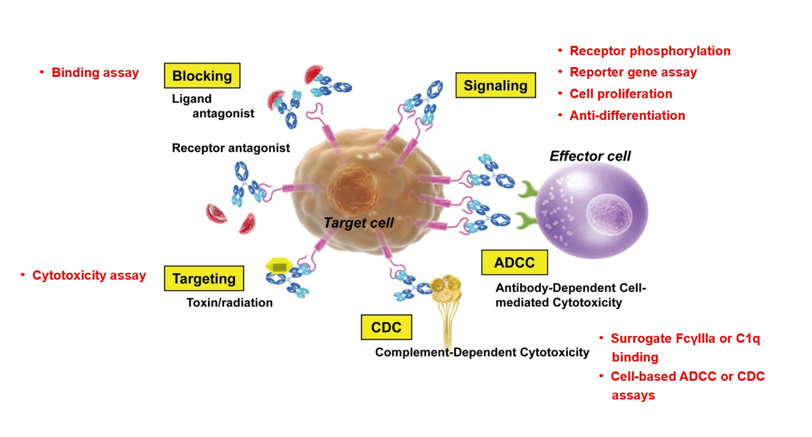
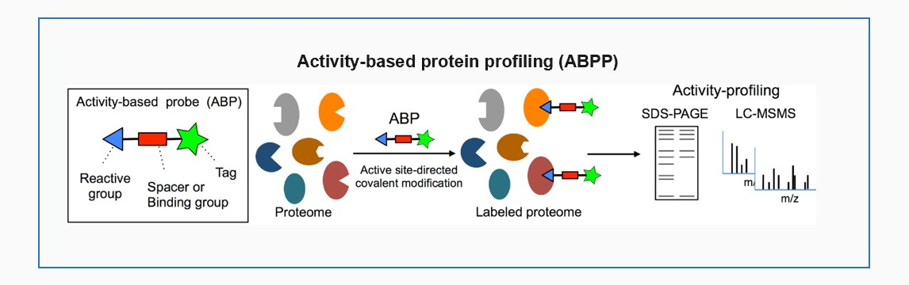

I am a researcher trained in biochemistry, molecular biology, and chemical proteomics, with a focus on mechanism-based bioactivity assays for vaccines and therapeutic monoclonal antibodies. My central interest is how in vitro readouts can be made both biologically predictive and analytically robust enough for regulated use.
The COVID-19 pandemic sparked my interest in vaccine-related public health challenges. My earlier training in chemical proteomics gave me a solid foundation in molecular quantification, sample handling, and bioinformatics. During my master’s research, I led the development and full analytical validation of two IC-ELISA assays for an MVA-based mpox vaccine—from recombinant antigen production and hybridoma generation to monoclonal antibody selection, assay optimization, and testing of vaccine batches. My study revealed strong correlations between antigen-specific in vitro readouts and in vivo immune responses in mice, supporting the feasibility of non-animal potency testing under the 3Rs principles.
I now work at the interface between assay development and industrial QC, where I develop, validate, and transfer mechanism-based bioactivity methods for therapeutic mAbs, including ADCC, CDC, and cell proliferation inhibition assays. This experience showed me that the key challenge is not only whether an in vitro assay correlates with in vivo efficacy, but also whether it remains sensitive, reproducible, and transferable enough for routine quality monitoring.
For my PhD, I aim to move beyond optimizing individual assays toward understanding the design principles that make in vitro potency assays predictive and robust. I am seeking training in pharmaceutical sciences, immunology, biomedical engineering, or vaccine/antibody research.
Vaccine potency testing still heavily relies on variable, costly in vivo animal assays, conflicting with the 3Rs principle, while regulatory authorities keep promoting in vitro alternatives. For therapeutic mAbs, biological activity represents a critical quality attribute distinct from small-molecule drugs. Nevertheless, a major bottleneck remains: it is challenging to establish well-validated, robust correlations between in vitro functional readouts and real in vivo protective or therapeutic outcomes, limiting broader adoption of non-animal assays.
My PhD-level research will center on two connected goals:
1. Develop high-throughput in vitro functional assay platforms to enable partial replacement of traditional animal-based potency tests.
2. Identify and mechanistically validate functional biomarkers capable of predicting in vivo protective or therapeutic effects.
Beyond merely building testing kits, I intend to embed immunological mechanistic insights into assay design. My objective is to deliver robust, standardizable bioactivity evaluation systems with translational potential to support pre-clinical assessment of vaccine and antibody candidates.
Mingchan Liang et al. Journal of Virological Methods, 2025 DOI: 10.1016/j.jviromet.2025.115204
Project Overview
Modified vaccinia virus Ankara (MVA) is a promising third-generation mpox vaccine candidate. Conventional potency evaluation largely depends on in vivo animal assays with high variability, high cost and ethical concerns; some neutralization assays additionally require BSL-3 containment. To address this gap, two indirect competitive IC-ELISA assays were established for specific quantification of L1 and A33, two key cross-protective antigens in MVA vaccine.
My Contributions
I contributed to study conceptualization and led the development and analytical validation of both assays. I produced recombinant M1 and A35 antigens in Expi293F cells and purified them by Ni-NTA affinity chromatography; performed mouse immunization, generated hybridomas, and screened target-specific mAbs. I selected two neutralizing mAbs, 5G9 and 16B8 (binding EC50 = 51.27 and 40.82 ng/mL; neutralizing IC50 < 100 µg/mL), and optimized the assay conditions by checkerboard titration. I then completed analytical validation, including specificity, accuracy/recovery, intra- and inter-assay precision, robustness, linearity, and LOD. I evaluated six batches (three consecutive high-dose and three consecutive low-dose) for batch consistency and 18 batches for correlation analysis, and used Spearman analysis to compare antigen content with TCID50 viral titer, MPXV cross-reactive IgG, and MVA neutralizing antibody titers in immunized mice.
Key Outcomes
The two IC-ELISAs showed good linear ranges, with LOD of 48.36 ng/mL for L1 and 3.74 ng/mL for A33. The assays met analytical requirements for vaccine quality control. Strong Spearman correlations were observed between in vitro antigen levels and in vivo immune responses (r > 0.91, p < 0.0001), providing experimental evidence for in vitro potency assessment of MVA vaccines.
Limitation & Future Perspective
These assays correlated with MVA neutralization and MPXV cross-reactive IgG, but they have not yet been validated against MPXV challenge protection. Formal surrogate-endpoint qualification will require MPXV challenge studies and/or MPXV neutralization data, which are constrained by BSL-3 requirements. How to translate observational correlation into rigorously validated predictive markers of protection is the core scientific question I wish to pursue during PhD training.

Industrial QC work
Overview
Biological activity is the critical quality attribute that distinguishes therapeutic mAbs from small-molecule drugs. Because each mAb has a distinct mechanism of action (MoA), assay selection and development are driven by its specific binding, blockade, signaling, or Fc-mediated effector function rather than by a single generic platform. In QC, these mechanism-based assays support batch release and must remain robust, reproducible, and transferable under pharmacopoeial and GMP requirements.
My Contributions
I perform and support bioactivity testing for multiple mAb products, including ADCC and cell proliferation inhibition assays for trastuzumab, the CDC assay for rituximab, and a HUVEC proliferation inhibition assay for bevacizumab. For new mAb products, I contribute to bioactivity method development, validation, and transfer, as well as SOP drafting and revision. On a routine basis, I perform these assays and support batch release testing under GMP requirements.
Unmet Challenge
A major challenge in this field is the transfer of bioactivity methods from R&D to QC. R&D assays are often optimized for mechanistic insight and flexibility, whereas QC methods must be robust, reproducible, and transferable across instruments, analysts, reagent lots, and laboratories while complying with pharmacopoeial requirements and GMP. The difficulty is not only to develop an assay sensitive enough to detect meaningful changes in product quality, but also to validate it against predefined acceptance criteria so that it remains reliable for routine batch release.

Collaborative work, National Natural Science Foundation project
Project Overview
Protein post-translational modifications regulate cellular signaling in both temporal and spatial dimensions. This project aimed to develop broadly applicable chemical protein labeling and activity-based protein profiling (ABPP) tools for endogenous proteins inside live cells, which enables capture and identification of reactive amino acid residues within native proteomes. These chemoproteomic and LC-MS workflows provide foundational technical capacity for quantitative protein analysis.
My Contributions
I participated in the development of a novel pyridinium-based labeling strategy for lysine-selective modification and live-cell ABPP profiling. My work included reactive amino-acid site classification, probe incubation and labeling workflow optimization, proteomic sample preparation, LC-MS/MS data acquisition and preliminary data interpretation. This platform supports rapid covalent tagging of endogenous proteins in intact live cells, for profiling functionally reactive residues.
(Anal. Chem. 2022, 94, 10, 4366)；
(Chem Sci. 2024, 15, 14, 5340)；
(Chem. Eur. J. 2023, 29, 62)；
(ACS Chem. Biol. 2022, 17, 3, 521)
Key Outcomes
This strategy achieved selective lysine labeling in live mammalian cells, compatible with standard activity-based protein profiling pipelines. The wet-lab and bioinformatic skills I built here — proteomic sample handling, mass spectrometry measurement, target-site analysis and statistical interpretation — became my technical foundation for antigen quantification and bioanalytical assay development in vaccine and antibody projects later.
Link to my core research direction
Chemoproteomics and MS-based protein characterization equip me to measure antigen abundance, profile protein epitopes, and dissect antibody-antigen interactions. These mass-spec tools can be further integrated into my PhD goal: building in vitro assay platforms to predict in vivo bioactivity and immune responses for biotherapeutics.

Email: liangmingchan@126.com